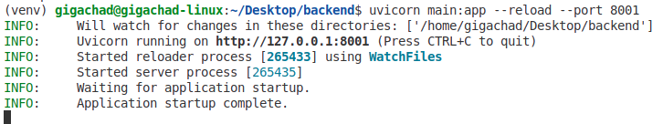
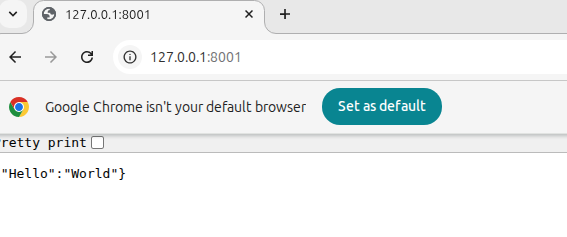
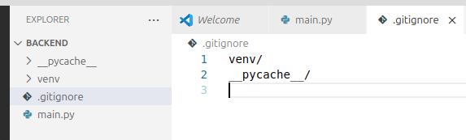
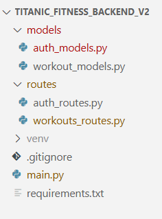
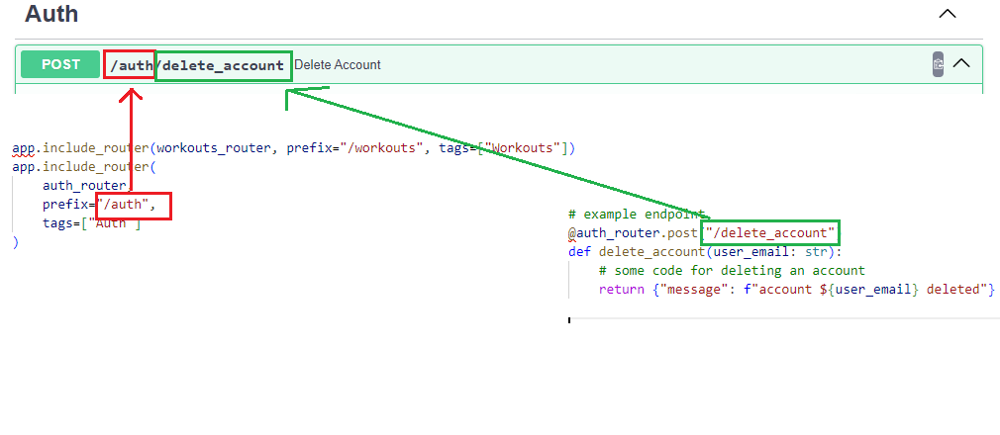

Starting a FastAPI backend
Understand the idea, then follow it through a working example.
- Create an isolated Python project and run it.
- Explain middleware and CORS.
- Connect models, routers and the app.
Build a local API
What you will have at the end
Create a Python backend that returns JSON, exposes interactive API documentation and groups endpoints into route files. Use the numbered steps to build it, and the explanations to understand why each part is there.
- Use VS Code and a supported Python 3 installation.
- Create a separate backend folder, such as
workshop_backend, alongside your frontend project. - No database or frontend connection is needed to test the first endpoint.
For the big picture, start with What is a backend?.
Step 1
Create the folder and main.py
- Create the backend folder and open it with File → Open Folder in VS Code.
- Open Terminal → New Terminal.
- Create
main.pydirectly in the project folder. Use lowercase consistently.
from fastapi import FastAPI
app = FastAPI()
@app.get("/")
def read_root():
return {"Hello": "World"}FastAPI() creates the application object called app. @app.get("/")
connects a GET request for the root path to read_root. Its returned Python dictionary becomes a
JSON response.
Step 2
Keep this project’s packages together
A virtual environment gives this project its own Python package installation location. It is not a virtual machine or the backend server. Run the commands for your terminal from the project folder.
Windows — PowerShell
py -m venv venv
.\venv\Scripts\Activate.ps1Windows — Command Prompt
py -m venv venv
venv\Scripts\activate.batmacOS / Linux — bash or zsh
python3 -m venv venv
source venv/bin/activate
Activation applies to the current terminal. Activate again when you open a new one. If PowerShell blocks
the activation script, use Command Prompt or invoke .\venv\Scripts\python.exe directly for the
Python commands below.
Check which Python is being used
python -c "import sys; print(sys.executable)"The path should point inside this project’s venv folder. On Linux, if creating a venv
reports a missing system package, follow that message or ask your classroom administrator to install the
matching Python venv support.
Step 3
Install FastAPI and its server tools
python -m pip install "fastapi[standard]"python -m pip uses the selected Python interpreter to install packages. The
standard extra includes the usual server tooling, including Uvicorn. Pydantic is a FastAPI
dependency and will be available for the models later.
What about pymongo?
pymongo is a Python driver for MongoDB. Install it when you add MongoDB access. Installing a
driver does not create or configure a database, and these examples do not connect to one.
Step 4
Start Uvicorn on port 8001
python -m uvicorn main:app --reload --port 8001

main:app- Import the file
main.pyand use itsappobject. Do not writemain.py:app. --reload- Restart automatically when source files change. This is a development convenience, not a production setting.
--port 8001- Use port 8001 for this classroom setup. Uvicorn otherwise defaults to 8000, which may already be occupied.
Use two normal hyphens before each option. Keep this terminal running while testing. Press Ctrl + C to stop it.
Step 5
See the JSON, then try the endpoint
Open http://127.0.0.1:8001/ in your browser. You should see the greeting:
{"Hello": "World"}

Use the automatic API documentation
- Open
http://127.0.0.1:8001/docs. - Expand GET /.
- Select Try it out, then Execute.
- Check the response body and the 200 status.
FastAPI generates this documentation from your endpoint definitions. It is a convenient client for testing your backend before building frontend requests.
Step 6
Ignore generated files; record packages
If using Git, create a .gitignore in the project folder:
venv/
__pycache__/
*.pyc
.env

With the venv active, save the installed versions:
python -m pip freeze > requirements.txtThis records the current environment’s installed packages, including dependencies. Update it after changing your project packages. Commit the source and requirements file; keep secret values out of Git.
Restore the project on another machine
Open the copied project, create and activate a fresh venv, then install its package list:
python -m pip install -r requirements.txtYou can then run the same Uvicorn command. Do not copy the old venv between machines.
Let the frontend read the API
Understand middleware and the browser’s cross-origin rules.
One shared layer
Work around an endpoint
Request arrives
Middleware can inspect or handle it before the endpoint.
continue
Endpoint runs
Performs this route’s operation.
return
Response leaves
Middleware can add headers or otherwise adjust the response.
Middleware can support logging, timing or response headers. Some middleware can return a response early without calling an endpoint. It does not replace every kind of route-specific validation or permission check.
Optional example: measure request time
Add these imports and this function to main.py after the app has been created. This example
adds a response header and does not change your route functions.
from time import perf_counter
from fastapi import Request
@app.middleware("http")
async def add_process_time(request: Request, call_next):
start = perf_counter()
response = await call_next(request)
response.headers["X-Process-Time"] = str(perf_counter() - start)
return responseThe timer starts before await call_next(request). That call continues request handling;
after it returns, the code adds a header to the response. A custom middleware example needs valid Python
and the await shown here.
Two origins
Why /docs works but frontend JavaScript may not
Frontend origin
http://localhost:5173
cross-origin request
Backend origin
http://127.0.0.1:8001
Browser JavaScript is restricted in what it can read from other origins. CORS is the
response-header mechanism that lets a backend permit selected origins to read cross-origin responses. Some
requests first trigger an OPTIONS preflight check.
The default /docs page and the API it calls are served from the same backend origin, so that
test does not need cross-origin permission. Your Vite page is at a different origin.
CORS is not authentication, a firewall or bot protection. Non-browser clients can call an API regardless of the browser’s CORS rules. For some requests the server may do the work even when the browser refuses to expose the response.
Step 7
Allow the actual frontend origin
Replace main.py with this version. It keeps the greeting and adds CORS for the two local Vite
addresses:
from fastapi import FastAPI
from fastapi.middleware.cors import CORSMiddleware
app = FastAPI()
app.add_middleware(
CORSMiddleware,
allow_origins=[
"http://localhost:5173",
"http://127.0.0.1:5173",
],
allow_methods=["GET", "POST"],
allow_headers=["Content-Type"],
)
@app.get("/")
def read_root():
return {"Hello": "World"}Use the address in your frontend browser’s address bar. If Vite uses another port, change the matching
entry. An origin has no page path, so do not add /about. The documents show port 3000; the
React setup here uses 5173.
allow_methods and allow_headers describe the cross-origin requests accepted by
this configuration. This example uses GET/POST and JSON’s Content-Type header. Add other methods or headers
when your app needs them. Deployed frontends need their actual origins in the list.
Keep the project organised
Separate request shapes, endpoint functions and app assembly.
Step 8
Group related models and routes
As the app grows, keep related endpoints together and put request shapes in model files. Create this
structure, including the empty __init__.py files:
workshop_backend/
main.py
models/
__init__.py
auth_models.py
routes/
__init__.py
auth_routes.py
venv/
.gitignore
requirements.txt

main.py assembles the app. The models folder describes accepted data. The
routes folder groups endpoint functions. Lowercase paths must match your imports.
Step 9
Describe the expected JSON body
Create models/auth_models.py. These examples mirror simple register and login form shapes:
from pydantic import BaseModel
class RegisterForm(BaseModel):
email: str
password: str
username: str
class LoginForm(BaseModel):
email: str
password: strBaseModel comes from Pydantic. The field name goes on the left and the type on the right.
Fields without defaults are required. FastAPI uses these models to parse and validate JSON request bodies
and document their shapes.
email: str means a string; it does not check that the text is a valid email address. These
models also do not establish password strength or prove anyone’s identity.
The following endpoints are request-handling exercises. Use made-up values. They do not create accounts, store passwords or log anyone in.
Step 10
Write endpoints in a separate file
Create routes/auth_routes.py:
from fastapi import APIRouter
from models.auth_models import LoginForm, RegisterForm
auth_router = APIRouter()
@auth_router.post("/register")
def register(register_data: RegisterForm):
public_data = register_data.model_dump(exclude={"password"})
return {"message": "Practice request received", "data": public_data}
@auth_router.post("/login")
def login(login_data: LoginForm):
return {
"message": "Practice request received; no login performed",
"email": login_data.email,
}APIRouter() groups these routes. A parameter typed as RegisterForm or
LoginForm tells FastAPI to read the request body using that model.
model_dump() converts the model to a dictionary. The exclude={"password"}
argument keeps the password out of the response. The login example reads login_data.email
without claiming that authentication succeeded.
These functions return practice messages only. Real account handling needs separate authentication and storage work.
Step 11
Assemble the final main.py
Replace main.py with this complete version. It imports the router, attaches it to the
application and retains the CORS settings and root endpoint:
from fastapi import FastAPI
from fastapi.middleware.cors import CORSMiddleware
from routes.auth_routes import auth_router
app = FastAPI()
app.add_middleware(
CORSMiddleware,
allow_origins=[
"http://localhost:5173",
"http://127.0.0.1:5173",
],
allow_methods=["GET", "POST"],
allow_headers=["Content-Type"],
)
app.include_router(
auth_router,
prefix="/auth",
tags=["Auth"],
)
@app.get("/")
def read_root():
return {"Hello": "World"}Prefix + route path = endpoint path
Router prefix
/auth
+
Route path
/register
=
Full endpoint
POST /auth/register
Another prefix example from the recap


The router file must be imported and included. Creating it on disk alone does not register its endpoints.
Step 12
Send a request body in /docs
- Keep Uvicorn running, or restart it from the active venv.
- Refresh
http://127.0.0.1:8001/docs. - Expand POST /auth/register under Auth.
- Select Try it out, replace the sample body with the JSON below, then select Execute.
{
"email": "learner@example.com",
"password": "practice-only",
"username": "learner"
}Expect a 200 response with the practice message, email and username. The response must not contain the
password. Try omitting username: the model validation should return 422 instead of running the
endpoint normally.
Test POST /auth/login using email and password only. The response should explicitly say that no login was performed.
What should be listed in /docs?
- GET /
- POST /auth/register
- POST /auth/login
If you only see GET /, check the import and app.include_router in your saved main.py.
Keep this handy
Return to the project
- Open the existing backend folder.
- Activate its venv in your new terminal.
- Run the server command again.
- Open the root response or /docs to check it.
python -m uvicorn main:app --reload --port 8001- “No module named fastapi” or “uvicorn”
- Check the selected Python and activate the project venv. Install the dependencies into that environment.
- Cannot import main
- Run from the folder containing
main.pyand check the spelling ofmain:app. - Address already in use
- Stop an old server you started, or choose a free port and use that same port in the browser.
- /docs works, but frontend fetch fails
- Check the frontend’s exact origin against CORS settings, the requested API URL and browser network errors. A stopped server is a different problem from CORS.
- 404 or 405 for a route
- Check both the full path and method. Typing a POST route in the browser address bar sends GET; test it through /docs instead.
Official references: virtual environments, middleware, CORS, request bodies and multiple-file applications.